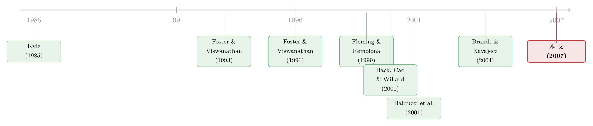

订单流里的「悄悄话」：当分歧越大，债市越听它说话
本文读的是 Pasquariello & Vega (2007, Review of Financial Studies)：在美国国债市场里，未预期的订单流 (order flow) 对收益率有显著且永久的冲击；而且这一冲击在「投资者分歧大、公共信号噪声高」的日子里被放大——一个标准差的异常订单流，在高分歧日能把五年期收益率压低 10.04 个基点，而低分歧日只有 4.07 个基点。作者用一个 Kyle (1985) 式的小模型，把「私有信息的聚合」与「公共新闻的聚合」这两条价格形成的暗线，第一次干净地接到了「信念分歧」与「数据质量」上。
1 一个老问题：价格为什么在「没有新闻」的日子里也乱跳？
先抛一个几乎所有做资产定价的人都被绊过一跤的事实。
在一个没有摩擦的世界里，资产价格应当只对公开新闻的意外部分做出反应。换句话说，价格的跳动应该集中在宏观数据公布、央行讲话这些「公告时刻」。可现实里，价格在非公告日同样上蹿下跳。Goodhart 与 O'Hara (1997) 早就把这件事称作资产市场研究里「一个谜」：能被归因到可识别的公开「新闻」上的市场波动，少得可怜。
那剩下的波动是从哪来的？
一个被反复祭出的答案是非对称信息 (asymmetric information)。当聪明钱交易时，他们的私有信息会通过订单流（也就是带方向的净买卖压力）部分地泄露给市场，于是即便没有任何公告，价格也会被悄悄修正。这条逻辑在股市、外汇市场都被验证过；在国债市场，Fleming & Remolona (1997, 1999)、Brandt & Kavajecz (2004) 与 Green (2004) 也都看到了它的影子。
但本文的野心要更进一步。作者问的不是「订单流有没有信息」——那几乎已成共识——而是一个更精细的问题：
订单流的信息含量，会随什么而变？
接着，一个自然的猜测是：当市场上大家「看法越不一致」、当公开数据「越不可信」时，私下交易里藏的信息就越值钱，订单流对价格的冲击就该越大。作者要做的，就是先用一个模型把这个直觉推出来，再到国债市场里把它测出来。
为什么挑国债而不是股票？作者给了三条理由，都很实在：其一，国债交易数据自带买卖方向，不必像股票那样用 Lee & Ready (1991) 的算法去猜方向、平白添一层测量误差；其二，宏观基本面与债券收益率之间的链接是单向清晰的（实体活动与通胀的意外上行 → 收益率上行），不像股市那样含糊，省去了大量遗漏变量的烦恼；其三，国债市场本身就是全球最大、最具流动性的市场之一，值得研究。
2 模型：把 Kyle (1985) 拧上两道「现实的螺丝」
这是一篇有理论模型的论文，模型是它全部经验预测的发动机。我们把它一步步拆开。
2.1 基准设定：先不放公共信号
这是一个两期、单期的经济。只有一种风险资产，其清算价值是一个正态随机变量 \(v\sim N(0,\sigma_v^2)\)。市场里住着三类风险中性的交易者：\(M\) 个知情交易者（作者称之为投机者 (speculators)）、若干流动性交易者 (liquidity traders)，以及一群完全竞争的做市商 (market makers, MMs)。
在 \(t=0\) 时没有任何信息不对称。到 \(t=1\) 之前，每个投机者 \(k\) 收到一个关于 \(v\) 的私有噪声信号 \(S_{vk}\)。信号向量服从多元正态分布，满足
$$\text{var}(S_{vk})=\sigma_s^2,\qquad \text{cov}(S_{vk},S_{vj})=\sigma_{ss}.$$
这里有个巧妙的设定：作者要求所有投机者合起来恰好知道清算值，即 \(\sum_{k=1}^{M}S_{vk}=v\)，于是 \(\text{cov}(v,S_{vk})=\sigma_v^2/M\)。这一手让「市场上私有信息的总量」固定下来，不随信号之间的相关程度而变——这样后面比较「信息分散 vs. 集中」时，比的才是同一块蛋糕怎么切，而不是蛋糕本身变大变小。
由此每个投机者对 \(v\) 的条件预期是
$$\delta_k\equiv E(v\mid S_{vk})=\frac{\sigma_v^2}{M\sigma_s^2}\,S_{vk},\qquad E(\delta_j\mid\delta_k)=\gamma\,\delta_k,$$
其中 \(\gamma=\sigma_{ss}/\sigma_s^2\) 正是任意两份私有信息禀赋之间的相关系数。作者用一个参数 \(\chi\equiv\sigma_s^2-\sigma_{ss}\ge 0\) 来刻画信号的异质程度：
- \(\chi=0\)：信息同质，人人收到同一个信号，\(\gamma=1\)；
- \(\chi=\sigma_v^2/M\)：信息完全异质，\(\sigma_{ss}=0\)，\(\gamma=0\)。
到了 \(t=1\)，投机者与流动性交易者一起把订单交给做市商。第 \(k\) 个投机者下单 \(x_k\)，利润是 \(\pi_k(x_k,p_1)=(v-p_1)x_k\)。流动性交易者贡献一个随机需求 \(u\sim N(0,\sigma_u^2)\)。做市商看不到任何私有信息，只能观察到总订单流 \(\omega_1=\sum_{k=1}^{M}x_k+u\)，并据此设定一个出清价 \(p_1\)。
2.2 均衡：一个有闭式解的 Kyle
均衡定义沿用 Kyle (1985)：投机者利润最大化，做市商半强式有效地定价（\(p_1(\omega_1)=E(v\mid\omega_1)\)）。在线性均衡里，作者解出了 Proposition 1：
$$p_1=\lambda\,\omega_1,\qquad x_k=\frac{\lambda^{-1}}{2+(M-1)\gamma}\,\delta_k,$$
$$\lambda=\frac{\sigma_v^2}{\sigma_u\,\sigma_s\,\sqrt{M}\,[2+(M-1)\gamma]}>0.$$
这里 \(\lambda\) 就是 Kyle 的价格冲击系数，\(\lambda^{-1}\) 衡量市场深度（流动性）。整篇文章的故事，几乎都压在投机者那条最优需求上。让我们把它逐块标注清楚：
怎么读这个式子？投机者明知自己一交易就泄露信息，所以会克制地下单（\(|x_k|<\infty\)），免得把自己的信息优势挥霍掉。而克制的程度，恰恰由分母 \(2+(M-1)\gamma\) 决定：
- 当 \(M>1\) 且信息同质（\(\gamma=1\)）时，投机者之间是赤裸裸的竞争，谁都怕被别人抢先，于是集体交易得更凶。激进的交易让订单流更具信息性，做市商的逆向选择风险反而下降，市场更深（\(\lambda\) 更小）。
- 当信息异质（\(\gamma\to 0\)）时，每个人手里都攥着一份别人没有的「独家」，于是像一个垄断者那样惜售——作者称之为「准垄断 (quasimonopolistic)」行为。\(M\) 个完全异质的投机者，合起来的交易量竟和一个垄断者一样小。这让做市商更容易被逆向选择宰割，市场更浅（\(\lambda\) 更大）。
于是有了第一个核心命题：
Corollary 1. 均衡市场流动性随投机者人数增加而上升，随其信息禀赋的异质性增加而下降。
这就是全文的发动机：信念越分歧（\(\gamma\) 越低）→ 投机者越惜售 → 订单流里每一单都「含金量」更高 → 价格对订单流越敏感（\(\lambda\) 越大）。
2.3 加上公共信号：噪声越大，私下交易越值钱
但真正关键的一步，是引入一个公共信号 (public signal) \(S_p\)——一个不需要交易就能获得的、关于 \(v\) 的共同信息源（你完全可以把它想成一次宏观数据发布）。它服从 \(S_p\sim N(0,\sigma_p^2)\)，且 \(\text{cov}(S_p,v)=\sigma_v^2\)，参数 \(\sigma_p^2\) 控制信号的质量：\(\sigma_p^2\) 越大，信噪比 \(\sigma_v^2/\sigma_p^2\) 越低，信号越「噪」。
公共信号一来，投机者真正私有的部分被「挤掉」了一块，只剩
$$\delta_k^*\equiv E(v\mid S_{vk},S_p)-E(v\mid S_p)=\alpha S_{vk}+\beta S_p,$$
其中 \(\alpha>0\)、\(\beta<0\)。Proposition 2 给出新的均衡价格 \(p_1=\lambda_p\,\omega_1+\lambda_s\,S_p\)。把它展开（论文的 Equation (5)），公共信号通过两条通道进价格：
$$p_1=\frac{\alpha}{2+(M-1)\gamma_p}\,v+\lambda_p\,u+\left(\lambda_s+\frac{M\beta}{2+(M-1)\gamma_p}\right)S_p.$$
一条是直接通道——做市商自己看到 \(S_p\) 后更新信念（\(\lambda_s>0\)）；一条是间接通道——通过投机者的交易行为（\(\beta<0\)）。作者证明 \(\lambda_s[2+(M-1)\gamma_p]>-M\beta>0\)，所以直接通道总是占主导，公共新闻总是以「正确」的符号进入价格。
由此得到第二组关键预测：
Corollary 2. 公共信号的出现会提高均衡市场流动性；而且（Remark 1）这种流动性的改善，随公共信号的波动率上升而减弱。
直觉是双重的：其一，公共信号本身是一份免费（trade-free）的信息，直接降低了做市商的逆向选择风险；其二，私有信息因被部分公开而「贬值」，逼着投机者更激进地把剩下的私货交易出去。但若公共信号本身太「噪」（\(\sigma_p^2\) 高），做市商无法信任它，只好更依赖订单流定价，投机者又重新变得谨慎——于是订单流的重要性回升。
把这两个推论叠在一起，就逼出了本文要拿去对数据的两条可检验命题：①订单流对价格的冲击，随信念分歧上升而增大；②这一冲击在公告日整体减弱，但当分歧大且公共信号噪声高时又会反弹。
3 识别策略：用「预测的离散度」给分歧称重
模型推完了，剩下的难题是：分歧和公共信号噪声这两个抽象变量，怎么在数据里量出来？
这正是本文经验设计里最漂亮的一招。
分歧 (dispersion of beliefs) 用专业预测者对宏观数据发布的预测的标准差来度量——同一个即将公布的数字，分析师们给出的预测越分散，说明市场参与者对基本面的看法越不一致。这和 Diether, Malloy & Scherbina (2002) 在股票横截面里用分析师预测离散度度量「意见分歧」是同一思路。
公共信号噪声 (public signal noise) 用实际公布值与其最后一次修订值之间的绝对差来度量——一个数据如果事后被大幅修订，说明它发布当下就「很不靠谱」，噪声大。
有了这两把尺子，作者就把样本日按分歧高低、按是否有公告、按数据噪声高低切开，分别回归：
$$\Delta(\text{bond yield})_t = a + b\cdot(\text{unanticipated order flow})_t + \text{controls} + \varepsilon_t,$$
看系数 \(b\)（订单流的价格冲击，对应模型里的 \(\lambda\)）和回归的 \(R^2\) 怎样随这些条件而变。这里的「未预期订单流」是从订单流里剔除可预测成分后的残差，对应模型中那个让做市商困惑的 \(\omega_1\)。
关键的识别逻辑：模型预测的是 \(\lambda\)（价格冲击）和「订单流解释力」如何随 \(\gamma\)（分歧）与 \(\sigma_p^2\)（噪声）系统性地变化。作者并不需要订单流本身完全外生，而是看它的价格冲击在不同信息环境下的横向比较——这恰恰是模型给出的、别处看不到的预测。关于「分歧到底是数字之争还是数字可信度之争」这一更细的区分，可参见《分歧的两副面孔：当投资者争的不是「数字」，而是「数字有多可信」》与《分歧本身没那么重要，重要的是「信息质量」在变》。
4 数据与主要结果
数据是美国国债市场上两年期、五年期、十年期国债收益率的日度变化，配上带方向的订单流，以及实时（real-time）宏观数据发布的预测与修订记录。样本聚焦于这三个最具代表性的期限。
结果非常干净，逐条对上了模型。
第一，订单流的冲击在高分歧日被放大。 在非公告日，一个标准差的异常订单流冲击，让两年期、五年期、十年期收益率分别下降——
- 高分歧日：
7.19、10.04、6.84个基点； - 低分歧日：
4.08、4.07、2.86个基点。
差距既具经济意义也统计显著。换算成解释力更直观：把五年期日度收益率变化对未预期订单流回归，调整后 \(R^2\) 在高分歧日高达 41.38%，低分歧日只有 9.65%。这正是模型说的——分歧大时投机者准垄断式惜售，订单流变得「字字千金」。
第二，公告日整体压低了订单流的解释力。 公共信号一登场，私有信息贬值。拿非公告日和非农就业 (Nonfarm Payroll) 发布日相比，订单流的解释力从——
- 两年期：
15.31%→6.47%； - 五年期：
21.03%→19.61%； - 十年期：
6.74%→3.59%。
第三，但当分歧与噪声同时高企时，订单流的重要性又反弹——与 Corollary 2 的 Remark 完全一致：噪声大的公共信号不可信，做市商被迫回头依赖订单流。
第四，这些冲击是永久的，不是库存效应。 作者强调，未预期的国债订单流对收益率的冲击在公告日与非公告日都是永久的，因此不能被解释为暂时的存货管理或组合再平衡——它真的是信息。
作为参照，Brandt & Kavajecz (2004) 此前发现订单流在没有重大宏观公告的日子里能解释多达 26% 的收益率变动；本文则把这个「订单流解释力」进一步条件化到了分歧与数据质量上，这是相对前人的实质推进。
5 文献脉络
这条线的源头，是 Kyle (1985) 那个奠基性的内幕交易模型——一个知情者、一群噪声交易者、一个定价的做市商，价格冲击 \(\lambda\) 由此诞生。

接着，一个自然的问题是：如果知情者不止一个，而且彼此信息不完全相同，会怎样？Foster & Viswanathan (1993) 把 Kyle 推广到椭圆等高分布，研究公共信息与竞争对成交量、价格波动的影响；Foster & Viswanathan (1996)「预测他人的预测」一文，与 Back, Cao & Willard (2000) 分别在离散与连续时间里刻画了异质知情者之间的竞争。但这两个动态模型都没有闭式解（Back et al. 那个是解析上棘手的逆不完全 Gamma 函数），其结论对校准参数敏感，也难以同时容纳「公共信号 + 不完全相关的私有信息」。本文的贡献，正是把这套直觉压缩成一个一次性、有初等函数闭式解的模型，从而给出无歧义的比较静态。
公共信息这条支线上，Kim & Verrecchia (1994) 指出公开披露在以「理解市场流动性」为目标的理论里一直被忽视，并讨论了它对流动性的影响；本文把它接到了异质、不完全竞争的投机者身上。
而在债市经验这一侧，Fleming & Remolona (1997, 1999) 问「什么在推动债券市场」、Balduzzi, Elton & Green (2001) 记录宏观新闻对债价的影响、Andersen, Bollerslev, Diebold & Vega (2003) 做实时价格发现，再到 Brandt & Kavajecz (2004) 与 Green (2004) 直接量订单流的作用——本文站在这条经验脉络的末端，第一次把订单流的价格发现作用，明确地接到了「投资者信念分歧」与「宏观数据质量」这两个可观测的环境变量上。Evans & Lyons (2002, 2003, 2004) 在外汇市场上的平行工作，则是它最近的「邻居」。
（关于国债收益率在数据发布前后的「抢跑」与价格发现，本博客另有《发行在前，新闻在后：国债收益率为什么会「抢跑」？》与《什么在推动国债收益率？》可对照阅读。）
6 评论与延伸（Q&A + 研究方向）
(a) 几个可能的疑问
Q：这和「订单流有信息」的老结论到底有什么不同？
老结论只说订单流平均而言含信息（系数显著、\(R^2\) 不为零）。本文的新意在于把这个信息含量条件化：它预测并验证了订单流冲击在「高分歧」「噪声大的公告」日子里系统性放大——五年期的 \(R^2\) 从低分歧日的
9.65%跳到高分歧日的41.38%。这是一个截面/状态依赖的预测，不是一句「显著」就能涵盖的。
Q：为什么是国债，而不是更常被研究的股票？
因为国债数据自带成交方向（不必用 Lee & Ready 算法去猜，省掉测量误差），且宏观基本面与收益率之间是单向清晰的链接（实体活动/通胀意外上行 → 收益率上行），遗漏变量的隐患远小于股市。这让「订单流冲击」的估计更干净。
Q：用分析师预测的离散度来代理「信念分歧」，可信吗？
这是文献里公认的代理（同 Diether-Malloy-Scherbina, 2002），优点是可观测、前瞻、与发布事件对齐。隐患是它度量的是「专业预测者」的分歧，未必等于真实交易者群体的分歧；好在作者声称结果对多种替代度量稳健。它仍是代理而非分歧本身，这是这类研究共同的软肋。
Q：怎么知道订单流的冲击是「信息」，而不是暂时的库存或再平衡压力？
关键证据是冲击的永久性：未预期订单流对收益率的影响在公告日与非公告日都不回弹。库存效应应当是暂时、会被反向交易抹平的；永久冲击则指向信息被永久地计入了价格。
Q：模型里那个「人越多、交易反而越激进」的结论反直觉吗？
表面反直觉，其实是竞争逻辑。同质信息下（\(\gamma=1\)），\(M\) 个投机者怕被对方抢先泄露同一份信息，于是抢着交易、集体更激进，订单流更具信息性，做市商逆向选择风险下降，市场更深。反过来，异质信息下每人都有「独家」，像垄断者一样惜售——\(M\) 个完全异质的人合起来的交易量，竟和一个垄断者相同。
Q：公告日订单流解释力下降，是不是说公告日信息不对称就消失了？
不是。公共信号只是把私有信息「贬值」了一部分，整体上压低了订单流的相对重要性；但若公共信号本身噪声大（事后被大幅修订），做市商不敢信它，又会回头依赖订单流——此时分歧与噪声同时高，订单流的重要性反弹。所以是「此消彼长」，而非「归零」。
(b) 几个可能的研究问题与提案
1. 把这套框架搬到公司债市场。
【经济故事】公司债的信息不对称远比国债严重（信用风险、发行人私有信息），且做市商主导、流动性分层。本文「分歧↑ → 订单流冲击↑」的预测在信用市场应当更强，尤其在评级临界、财报前后的窗口。 【可行性】中。TRACE 提供成交记录但不带可靠方向，需用算法推断方向（重新引入测量误差，恰是本文想避开的）；分歧可用分析师对发行人盈利的预测离散度代理。识别可借鉴本文的「状态依赖」比较。数据可得，难点在订单流方向的质量。（流动性度量上，可参考《把「成交价」从「成交量」里解放出来——重新丈量公司债的流动性》。）
2. 外资持有人是不是「更分歧」的那一类知情者？
【经济故事】外国投资者对美国宏观数据的解读可能系统性地不同于本土机构，构成模型里 \(\gamma\) 较低（信息更异质）的一群投机者。若能把订单流按交易者国别拆开，应能看到外资订单流在分歧高的日子里冲击更大。 【可行性】中偏低。需要带交易者类型/国别标签的订单流数据（TIC 或一级交易商内部数据，普通研究者难得），但若能拿到，识别非常干净。
3. 公共信号「噪声」的内生反应。
【经济故事】本文把数据修订幅度当作外生的噪声度量。但统计机构可能在不确定性高时主动发布更粗的初值，使噪声与分歧内生相关。把数据修订的预测性（Aruoba, 2004; Faust-Rogers-Wright, 2005）接进来，能检验做市商是否「理性地」对可预测的修订打折。 【可行性】高。实时数据集（Croushore-Stark 的 Philadelphia Fed 实时数据库）公开可得，与本文订单流数据结合即可。
4. 高频窗口为什么「测不出」分歧效应？
【经济故事】本文明确指出 Green (2004) 在新闻发布前后 30 分钟窗口里只看到微弱效应，并猜测异质知情者会故意延后交易以保住信息优势，使窄窗口低估了分歧对流动性的影响。这个「最优延迟交易」本身值得直接建模与检验。 【可行性】中。需要日内逐笔数据与精确的信息到达时点；后者不可观测，正是难点所在。可用结构估计反推延迟分布。
7 我的判断
这篇文章最让我欣赏的，是它的自律。理论部分没有去追求更花哨的多期动态，而是甘心退回到一个一次性博弈，只为换来一个有初等函数闭式解、能给出无歧义比较静态的模型——而 Foster & Viswanathan (1996)、Back et al. (2000) 那些动态模型恰恰栽在「没有闭式解、结论随校准参数飘」上。经验部分则贡献了一对极聪明的代理：用预测离散度量分歧、用修订幅度量噪声，把抽象的 \(\gamma\) 和 \(\sigma_p^2\) 第一次接到了可观测的世界，再用「状态依赖的订单流冲击」做检验。41.38% vs. 9.65% 这种量级上的反差，很难用别的故事讲圆。
担忧主要在识别的两端。其一，分歧的代理是「专业预测者」的分歧，未必等于真实交易者的分歧，二者在某些状态下可能背离；其二，订单流本身的内生性虽被「状态比较」绕开了一部分，但「高分歧日」与「高波动日」「高基本面不确定性日」高度重合，要把模型机制（准垄断惜售）与单纯的波动率效应彻底分开并不容易——文中的稳健性能缓解，却难以根除。
我接下来最想看到的，是把这套框架推到信息环境可以被外生扰动的设定里：比如一次数据发布制度改革、或一类投资者（外资、被动资金）被规则性地挡在门外或放进来，从而对 \(\gamma\) 或 \(\sigma_p^2\) 制造干净的外生变化，再看订单流冲击是否如模型预言地移动。那将把今天这篇出色的「相关性 + 结构解释」，推进到真正的因果。
参考文献
- Back, K., H. Cao, and G. Willard (2000). Imperfect Competition Among Informed Traders. Journal of Finance 55, 2117–2155.
- Balduzzi, P., E. Elton, and C. Green (2001). Economic News and Bond Prices: Evidence From the U.S. Treasury Market. Journal of Financial and Quantitative Analysis 36, 523–543.
- Brandt, M., and K. Kavajecz (2004). Price Discovery in the U.S. Treasury Market: The Impact of Order Flow and Liquidity on the Yield Curve. Journal of Finance 59, 2623–2654.
- Diether, K., C. Malloy, and A. Scherbina (2002). Differences of Opinion and the Cross Section of Stock Returns. Journal of Finance 57, 2113–2141.
- Evans, M., and R. Lyons (2002). Order Flow and Exchange Rate Dynamics. Journal of Political Economy 110, 170–180.
- Fleming, M., and E. Remolona (1999). Price Formation and Liquidity in the U.S. Treasury Market: The Response to Public Information. Journal of Finance 54, 1901–1915.
- Foster, F., and S. Viswanathan (1993). The Effect of Public Information and Competition on Trading Volume and Price Volatility. Review of Financial Studies 6, 23–56.
- Foster, F., and S. Viswanathan (1996). Strategic Trading When Agents Forecast the Forecasts of Others. Journal of Finance 51, 1437–1478.
- Goodhart, C., and M. O'Hara (1997). High Frequency Data in Financial Markets: Issues and Applications. Journal of Empirical Finance 4, 73–114.
- Green, C. (2004). Economic News and the Impact of Trading on Bond Prices. Journal of Finance 59, 1201–1233.
- Kim, O., and R. Verrecchia (1994). Market Liquidity and Volume around Earnings Announcements. Journal of Accounting and Economics 17, 41–67.
- Kyle, A. (1985). Continuous Auctions and Insider Trading. Econometrica 53, 1315–1335.
- Lee, C., and M. Ready (1991). Inferring Trade Direction from Intraday Data. Journal of Finance 46, 733–746.
- Pasquariello, P., and C. Vega (2007). Informed and Strategic Order Flow in the Bond Markets. Review of Financial Studies 20(6), 1975–2019.